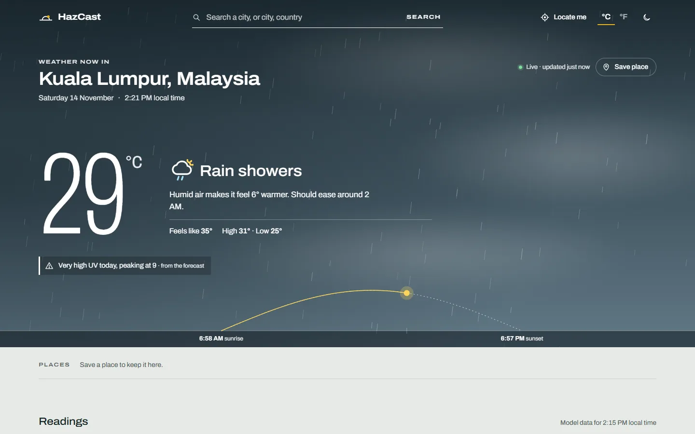
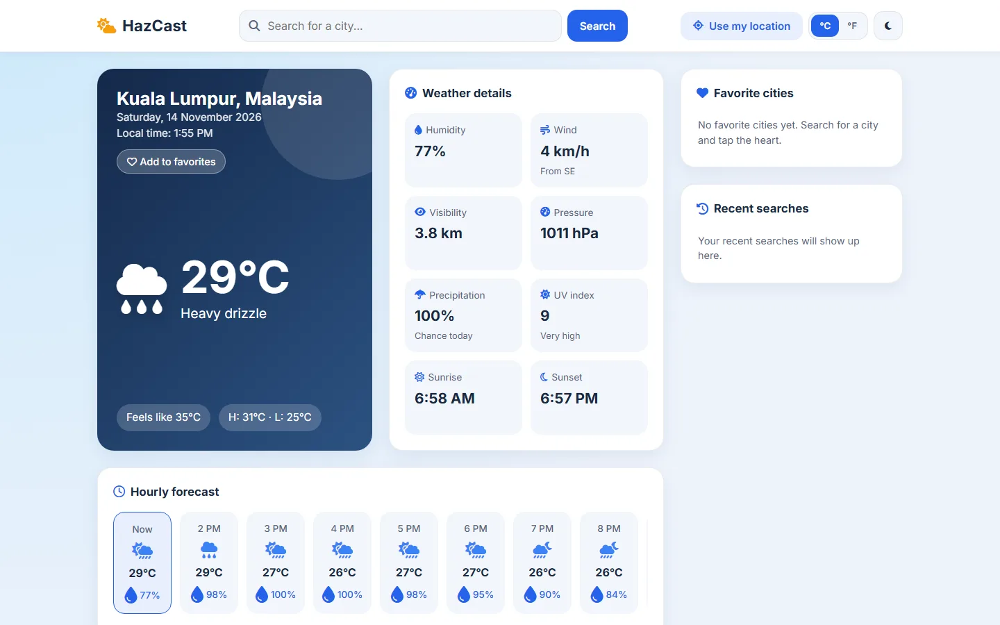
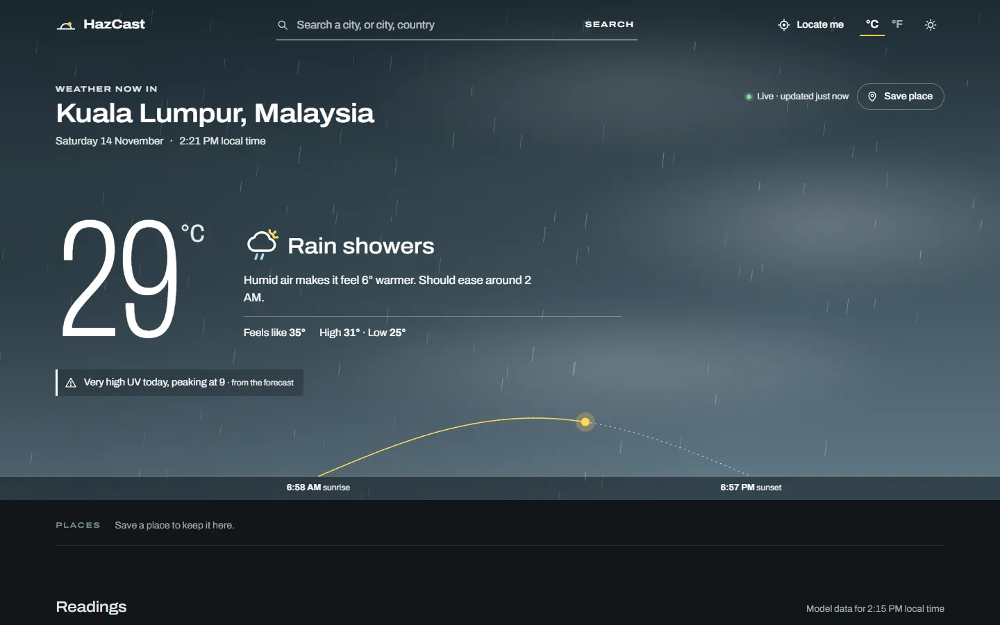
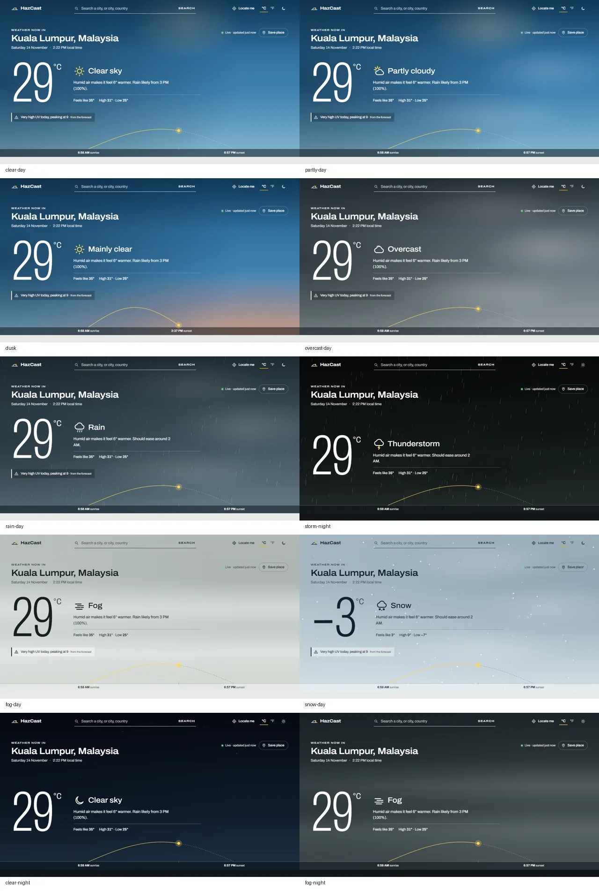
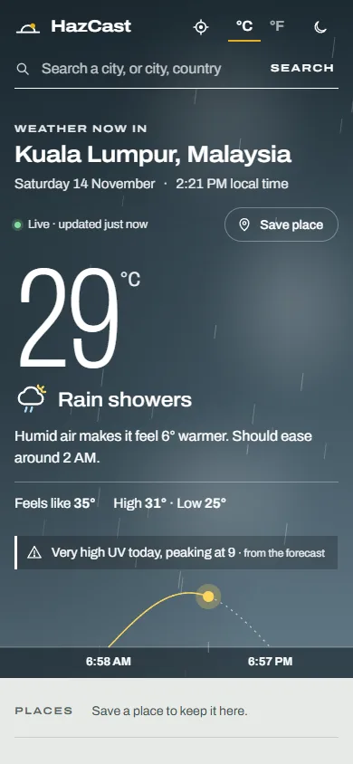
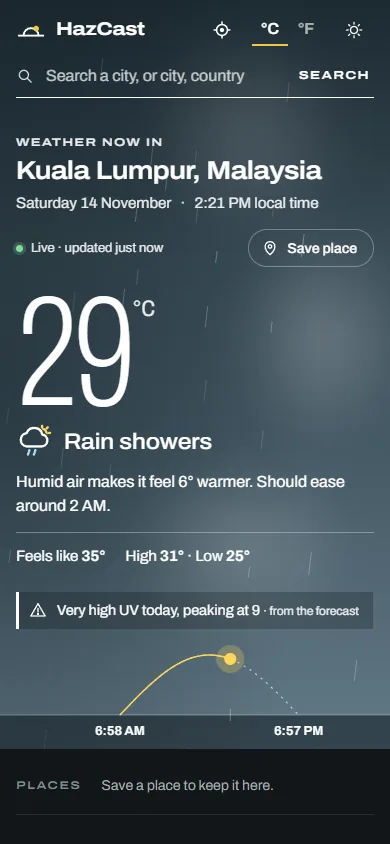

Case study · weather dashboard
A weather app that looks like the weather
HazCast started as a tidy but generic card grid. I redesigned it into an atmospheric dashboard where the sky at the top of the page is the current weather, then added rain for the next two hours, radar, official alerts and offline support, without inventing a single number.
- Role
- Design and front-end
- Stack
- HTML, CSS, vanilla JavaScript, no build step
- Data
- Open-Meteo, RainViewer, US National Weather Service
- Keys or backend
- None

The problem
The first version worked well but said nothing about weather. It used Inter, blue buttons and white cards, the same as my productivity app, and every panel had the same weight, so the current temperature competed with eight equal tiles.
Some of the data also read wrong. "Precipitation 100%" looked like it was raining now when it meant a chance today. There was no last-updated time, and a failed request on start-up left an empty page.
I wrote a design audit before touching any code, listing what to keep, what was broken, and what each change should fix.


Design decisions
-
The sky is the hero
Sky moods for clear, cloudy, fog, rain, snow and storm, by day and night, plus dawn and dusk around the real sunrise and sunset. Rain and snow are a light canvas layer that pauses off screen, in background tabs and for reduced motion.
-
A horizon line as the signature
Sunrise on the left, sunset on the right, and the sun where it actually is between them. It replaces two plain text tiles and answers "how much daylight is left" at a glance.
-
Charts instead of tiles
The next 24 hours is one temperature curve with rain-chance bars and wind, readable with hover, tap or arrow keys. The week puts every high and low on one shared scale, so a warm day looks warm.
-
Its own identity
Archivo's width axis does the work: condensed thin numerals for temperatures, wide capitals for labels. A cool mineral ground, a wet-slate dark mode, and one yellow kept for the sun and "now".

Honest data
The rule for the whole project was simple: never show a number the data did not give us, and always say where it came from.
- Live or saved. The last forecast for each place is kept. It shows straight away marked "saved" with its age, then is replaced by live data. Offline or rate-limited, the saved copy stays with a retry.
- Forecast notes are not warnings. Notes like "heavy rain possible around 4 PM" are labelled "from the forecast". Official alerts come only from the US National Weather Service and are labelled with it. Everywhere else the page says plainly that it cannot show them.
- Rain in the next two hours uses Open-Meteo's 15-minute model data and says so: "model estimate, not radar".
- Radar is the past two hours only. RainViewer no longer offers a radar forecast, so the timeline stops at now, and the page says a clear area can mean no radar coverage, not no rain.
- Location is rounded to about 1 km before it is sent anywhere or saved.


On phones the week becomes rows with a range bar, and saved places sit right under the sky instead of at the bottom.
Engineering
- No framework and no build step, kept on purpose. The pure logic (unit conversion, weather codes, the rain nowcast, share links, reordering) lives in
weather-core.jsand is covered by tests that run with Node's built-in test runner. - Every request has a 12 second timeout. A slow air-quality service never holds up the forecast, and out-of-date responses are ignored when you switch places quickly.
- Leaflet loads only when you open the radar, pinned to one version with integrity hashes.
- A service worker keeps the app itself available offline and installable. Weather data is not cached by it, so nothing stale is ever shown as live.
- Places can be shared as links, saved, and reordered by drag or with Alt and the arrow keys.
What I would do next
Official alerts outside the US need a separate source for each country, often with keys or licences, so they are left out rather than half done. I would also like a radar forecast if a free, keyless source appears, and a proper settings panel for wind and pressure units.